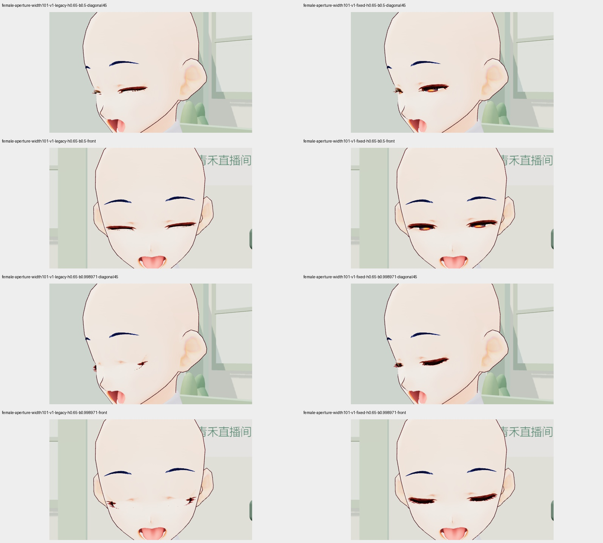

084c61578262 · happy + blink 睫毛叠加修正候选
同版本 legacy / fixed。正常片依次旧规则讲话至少3次眨眼、恢复中性、新规则讲话至少3次眨眼、恢复中性。含原生加载画面，未剪接改速。原女性与男性，眼端点none/+1%各一片；单眼组合不在修复范围。
完整正常1×影片
原尺寸同姿正常材质
同姿对照、全时段抽帧与眨眼附近密集帧
抽帧不是连续人类观感验收。密集区间使用video/trace近似偏移，不能把视频帧标成精确数值权重时刻。

结果与限制 · 实际记录 · 时序与密集帧索引